В культуре
Нильский крокодил живёт не только в реках Африки. Но и «живёт» в картинах, книгах и мультфильмах. Люди уже много тысяч лет рисуют и описывают этого грозного хищника.
В Древнем Египте крокодил был священным животным
Его считали воплощением бога Себека — покровителя воды и разлива Нила. Египтяне: строили храмы в честь Себека, где жили настоящие крокодилы; делали статуи крокодилов из камня и бронзы; рисовали крокодилов на стенах гробниц и папирусах; носили амулеты в виде крокодилов для защиты от опасностей. На рисунках крокодилов часто изображали с короной или рядом с богом Себеком, у которого была голова крокодила.
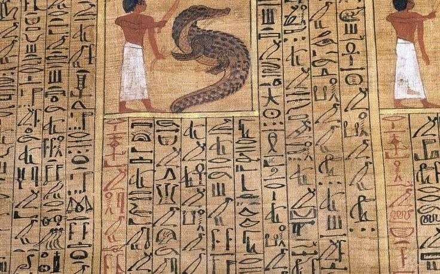
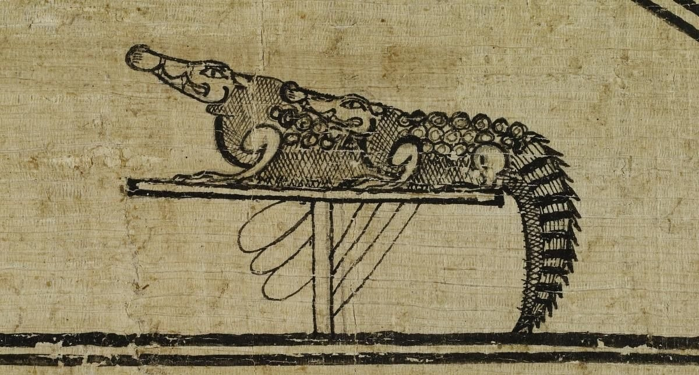
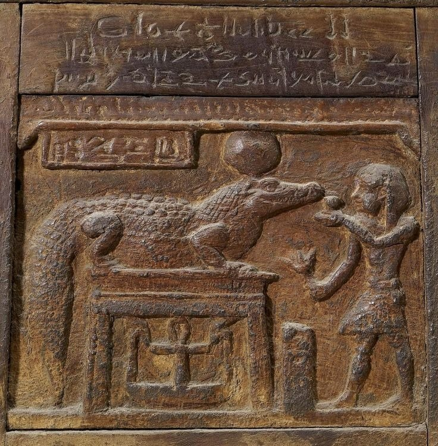
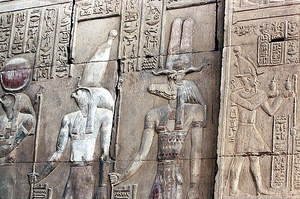
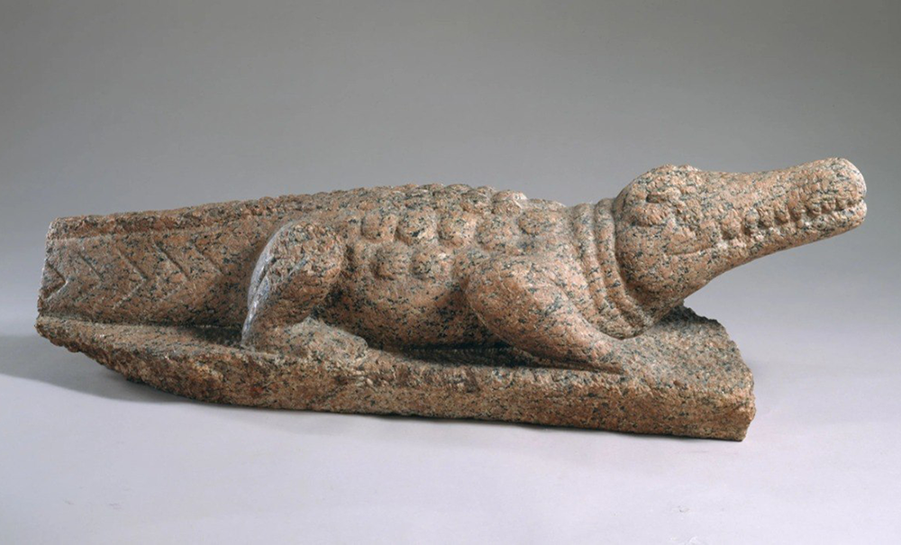
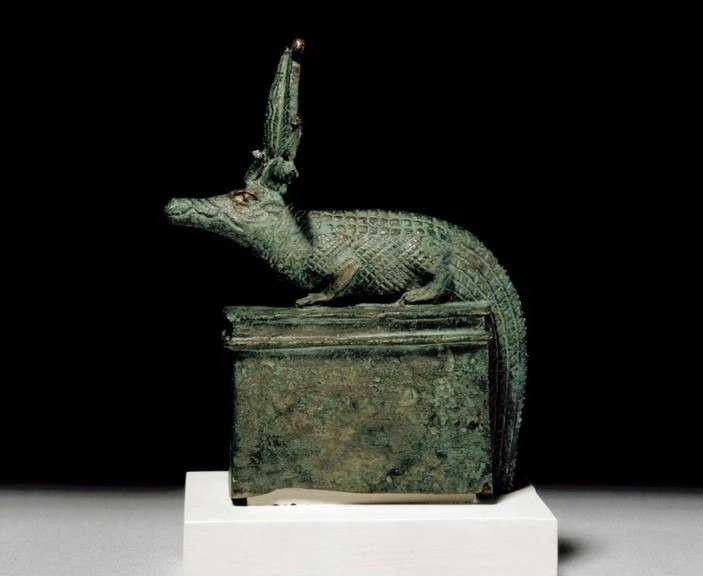
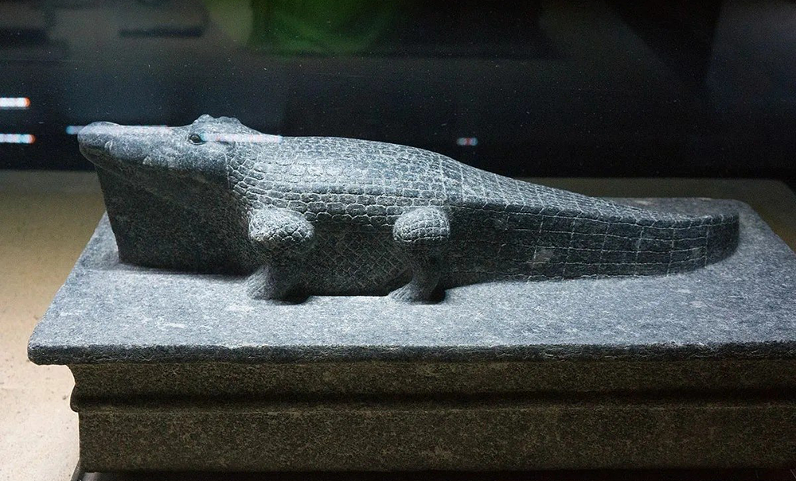
Средневековье: крокодил как диковинка
В Средние века люди в Европе мало знали о крокодилах. Они видели их только на картинках в книгах о дальних странах. Поэтому художники рисовали их по рассказам путешественников — иногда получалось очень забавно! Особенности средневековых изображений: крокодилы выглядели как фантастические чудовища с огромными зубами; иногда их рисовали с крыльями или длинной гривой; в книгах рядом с крокодилом писали небылицы — например, что он плачет, когда ест добычу (отсюда пошло выражение «крокодиловы слёзы»).
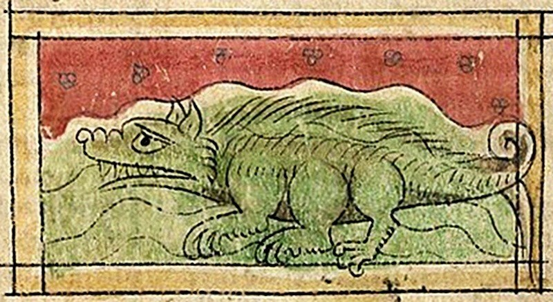
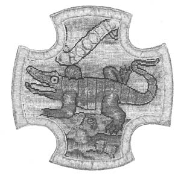
Живопись и скульптура Нового времени
Когда люди стали больше путешествовать, художники начали рисовать крокодилов с натуры — то есть такими, какие они есть на самом деле. появились: реалистичные картины с изображением крокодилов в их среде обитания; научные иллюстрации для книг о животных; скульптуры в зоопарках и музеях; изображения крокодилов на географических картах Африки как символ опасных рек.
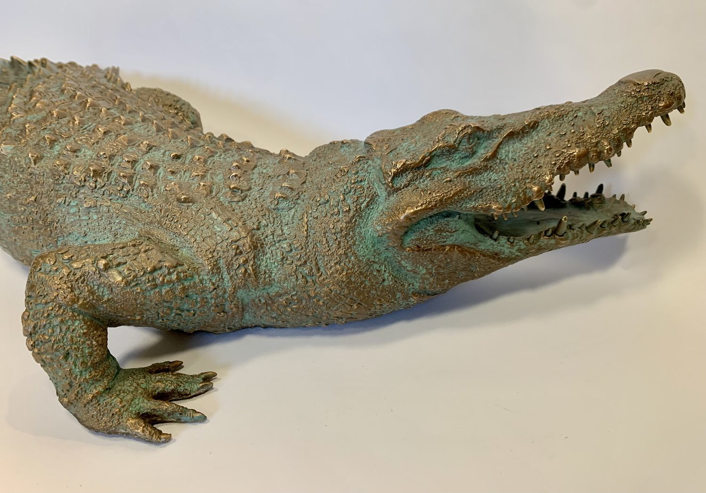
Крокодил в книгах и сказках
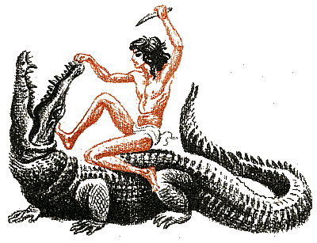
Нильский крокодил стал героем многих детских книг и сказок: в африканских народных сказках он часто выступает как хитрое, но не всегда умное животное; В «Книге джунглей» Редьярда Киплинга крокодил помогает Маугли; В детских познавательных книгах крокодил — интересный герой, про которого можно узнать много нового. Крокодил — один из ключевых персонажей в произведениях писателя Корнея Чуковского («Мойдодыр», «Бармалей», «Телефон» и др.).
Крокодилы в мультфильмах и кино
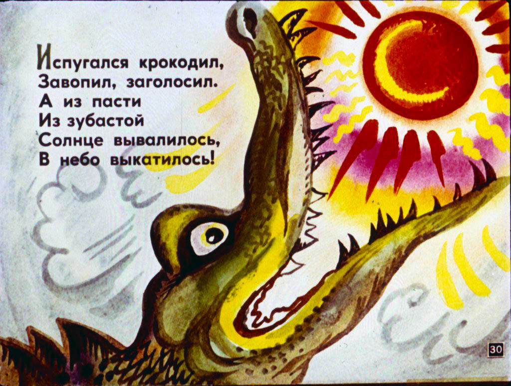
Сегодня мы часто видим крокодилов на экране! Они бывают: добрыми и смешными (как крокодил Гена из советского мультфильма); серьёзными и грозными (в документальных фильмах про Африку); волшебными (в сказках и фэнтези); забавными (в детских мультсериалах про джунгли).
Современное искусство и поп‑культура
Логотипы — например, бренд Lacoste использует изображение крокодила; граффити на стенах с изображением крокодилов; компьютерные игры, где крокодилы могут быть персонажами или препятствиями.
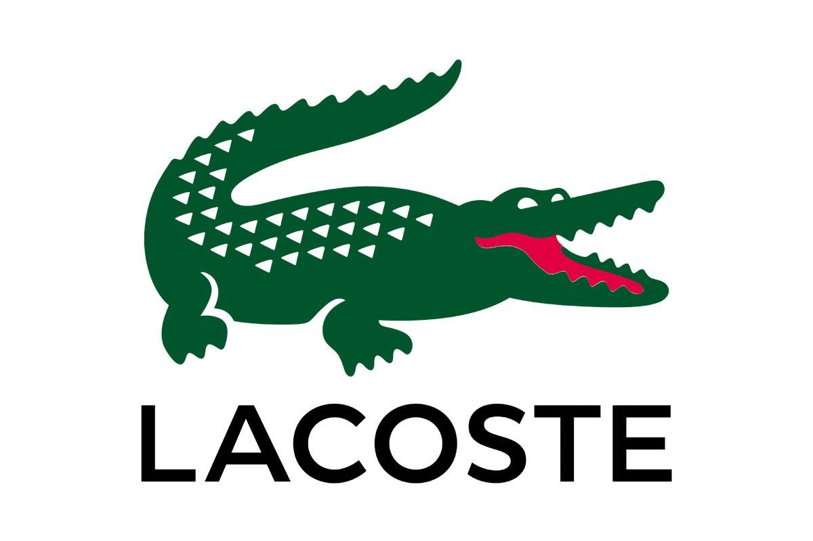
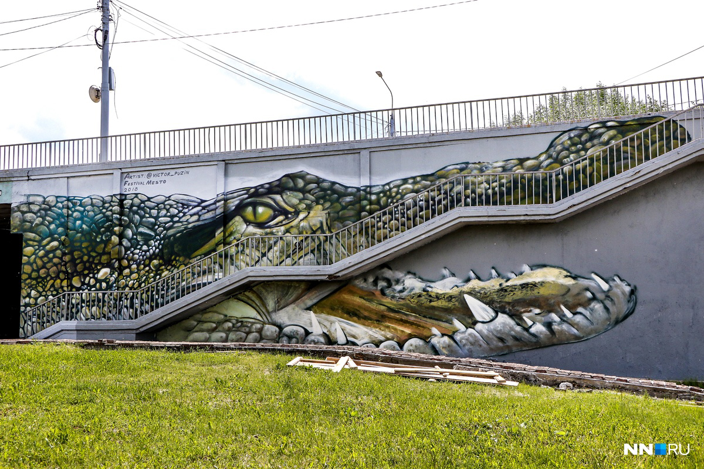
ИНТЕРЕСНЫЕ ФАКТЫ
В Древнем Египте крокодилов иногда мумифицировали — как фараонов. Выражение «крокодиловы слёзы» появилось из‑за того, что у крокодилов при еде выделяются слёзы — это особенность их организма, а не настоящее сожаление. Крокодил Гена стал одним из самых любимых детских персонажей в России. В Африке до сих пор рассказывают народные сказки про хитрого крокодила и его друзей. Некоторые африканские племена до сих пор считают крокодилов священными животными и изображают их в традиционных танцах и масках.